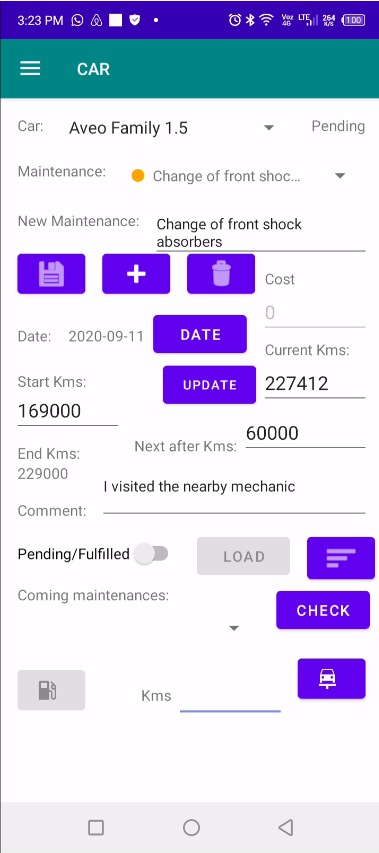

Painel de Gerenciamento de Manutenção de Veículos
Interface principal desktop utilizada para gerenciar cronogramas de manutenção, histórico de serviços, acompanhamento de reparos e histórico completo de manutenção do veículo.

Análise de Custo de Combustível por KM
Gráfico analítico exibindo o custo de combustível por quilômetro ao longo dos últimos 12 meses para avaliação precisa dos custos operacionais de longo prazo.

Análise de Dispersão Custo de Manutenção vs Quilometragem
Gráfico de dispersão posicionando o custo de manutenção no eixo Y e a quilometragem no eixo X para visualizar padrões de reparo e comportamento de manutenção.

Interface de Solicitação de Suporte Técnico
Janela de suporte integrada permitindo que os usuários solicitem assistência técnica, relatem problemas e recebam ajuda direta.

Interface de Sincronização Mobile
Janela de sincronização utilizada para conectar com segurança o aplicativo mobile ao software desktop para transferência de dados de manutenção em tempo real.

Módulo Mobile de Gerenciamento de Manutenção
Interface do aplicativo mobile para gerenciar tarefas de manutenção remotamente enquanto mantém sincronização centralizada com o software desktop.

Níveis de Urgência de Manutenção do Veículo
Spinner inteligente exibindo tarefas de manutenção usando indicadores de urgência codificados por cores: vermelho para crítico, laranja para próximas manutenções e amarelo para planejamento futuro.

Custo de Manutenção Agrupado por Nível de Urgência
Visualização das despesas de manutenção agrupadas por nível de urgência para ajudar na priorização do orçamento e no planejamento dos serviços.